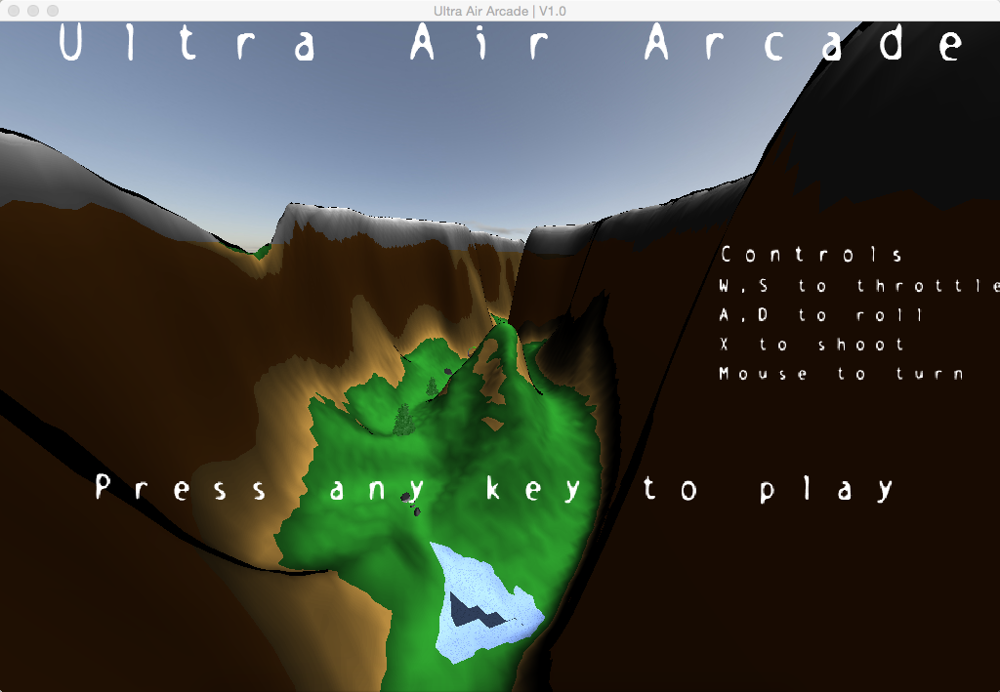

Ultra Air Arcade
- Created by
- Drew Troxell (Project Manager)
- Billy Aujla
- Aaron Koeppel
- Riley McGovern
- Lejon McGowan
- Zachary Weisman
- Class
- CPE 476
- Professor
- Dr. Zoe Wood
- Inspired by
- Mario Kart
- War Thunder
- Air Brawl
Description of the game (3-5 sentences).
Download
Download Ultra Air Arcade for OSXDownload Ultra Air Arcade for Fedora
Source code is also available at GitHub.
Installation & Play Guide
Instalation and play guide
Technologies
Technology name Owner's name
Brief overview of technology in game.
Collision Detection Riley McGovern and Zachary Weisman
The collision detection in Ultra Air Arcade was done using hierarchical bounding spheres for the planes. The spheres are arranged into two levels: One large sphere surrounding the entire volume of the aircraft, and five smaller spheres placed on the left and right wings, tail and nose, and one in the center. To reduce computational complexity, the game would not check any of the five smaller spheres until after a collision was flagged with the large outer sphere. For the collision with the terrain, the plane's Y coordinate was checked to make sure it was not below the height of the terrain object's height based on the plane's position.
Collision Detection Response Riley McGovern
The collision detection response in Ultra Air Arcade contained collisions between a plane and another plane, a plane and the terrain, and a plane and a missile. The collisions between two planes were based on the positional vectors of the two planes that were colliding and small math with quaternions would softly "bounce" them off of each other. The collisions between a plane and the terrain would send back the plane two times the normal vector of the triangle of the terrain that the plane hit. After resetting, the plane would continue using it's thrust that it had before the collision so the plane would not get too far behind the opponents. The collisions between a missile and a plane would cause the targeted plane to lose half of it's thrust, so that the player could catch up.
Sound Riley McGovern
The sound in Ultra Air Arcade was run through a third party library called SFML. The library was wrapped in a custom class for use within the game. The sound of the plane was done by increasing and decreasing the pitch based on whether the player was speeding up or slowing down. Both the main theme song and race song were played on a loop. Collisions with the terrain and other planes were played in short snippets when those collisions occurred. The main countdown was done by counting down frames and playing the sound after a certain number of frames had passed. All sound was used from royalty-free sound libraries that are listed below for reference.
Skybox Zachary Weisman
A simple cube map was implemented, and an array of textures were loaded onto it. A special GLSL datatype - samplerCube - handled the fetching of the correct texel depending on what the camera was facing, thus making implementation relatively simple. The position of the skybox was locked to the players x - z coordinate, but was given a y - position of zero in order to keep an accurate sense of height as the player travels up and down.
Shadows Zachary Weisman
Shadows in our game were implemented using the shadow mapping technique. Using shadow maps, the scene is rendered twice using two separate sets of shaders. The first pass simply writes the depth value per pixel of the scene from the light-sources perspective to a framebuffer object; this is called a depth map. Then, on the CPU, that depth map is transformed to fit over the scene from the cameras perspective. Finally, a separate shader is run to render to the screen using the depth at each pixel to calculate a light factor, or simply a number to multiply the output color by in order to reduce its brightness, and make it appear shadowed.
Particles Zachary Weisman
A particle class was developed for Ultra Air Arcade that was based off of a simple billboard system. Upon initialization of a particle object, sixty variable sized billboards would be created, and upon rendering, the particles would be instanced one per frame for the first sixty frames of their lives, which makes them appear from the same position at different times. This, along with a randomness factor calculated at instantiation helps to make them move a little more naturally.
Brief overview of technology in game.
3D Camera View & Flight Dynamics Drew Troxell
In order to provide a fulfilling flight control system and camera view, the 3D camera is controlled by two areas: Entity.hpp and Camera.hpp. The Entity class contains the flight dynamics necessary to propel one of our jet models through the air. The flight utilizes a mostly physical model, relying on a forward thrust force and a counteracting drag force to stabilize acceleration. Each entity maintains attributes such as mass, surface area, and drag coefficient to support this. Flight occurs on a time step that is set by the current fps of the game. All rotations of a plane are contained in two quaternions: the rotation and the target rotation. The rotation quaternion contains the current rotation of the model, while the target rotation contains the rotation to which the plane model is attempting to rotate. The rotation quaternion is proportionally controlled toward the target rotation, allowing for a very clean feedback system that makes fast rotations when the mouse is moved swiftly and slow rotations when the mouse is moved lightly.
The 3D camera view for the is dictated based on the player's entity. The camera view is set to be behind the player and pulls further back as the player accelerates, giving an increased sense of speed. The camera attempts to match the player's rotations, but includes some lag in order to provide the visual change of the player model rotating relative to the camera and then the camera catching up.
The camera also includes some debug tools. The camera is capable of switching which model it is using as it's "player" on the fly, allowing for debugging by using an AI character as the camera's center. Without this view, the AI in its current state would largely not be possible. The camera also has a simple free look debug state that allows for free look movement around the map regardless of entity location.
Game States & Opponent AI Drew Troxell
The underlying game intelligence is split into two areas: Rules.hpp and RacerAI.hpp. Rules.hpp dictates the current state of the game and controls transitions from one game state to another. The game consists of 6 main states: splash screen, character select, race, finish, and leaderboard display. The main game mechanics occur in the race state, while the other states exist to provide context, direction, and goals for the player. Transitions between game states are controlled by input for all states that aren't race. The transition from race state to finish state occurs when the player has finished 3 laps. Rules.hpp also handles keeping track of the player's current place in the race as well as activating the avoidance states of the opponent AIs.
RacerAI.hpp dictates the current state of the opponent AI and controls transitions from one AI state to another. The opponent AI consists of 6 states: splash screen, race setup, race, avoid, bounce, and finish. Splash screen simply sets up the track positions for the player's AI if they are not already set. Setup state reinitializes all opponents and the player to the starting location of the race (and resets race status variables). Race controls the waypoints to which the opponents are heading as well as controlling thrust and boost bonuses for rings. The avoid and bounce states are triggered by external classes and provide AI responses for avoiding nearby opponents and bounceing off of colliding opponents respectively.
AI Pathfinding is controlled by a global list of designated track checkpoints. When instantiated, each AI takes this list and runs a noise function based on a normal distribution around it to generate an identically sized list containing their now modified track checkpoints. The AI then uses this new noisy checkpoint list to navigate the map instead of the global list. In doing so, each AI follows a unique path with a varying level of optimality. This leads to opponents that are spread out through the map in small groupings depending on the optimality of their paths, allowing the player to move through the standings rather than have one large swarm of AI pass by with every mistake.
Technology name
Brief overview of technology in game.
Technology name
Brief overview of technology in game.
Technology name
Brief overview of technology in game.
Pictures
Photos with captions.
Caption for image 1
Caption for image 1
Caption for image 1

Caption for image 1
Caption for image 1
Caption for image 1
Video
Demo of a race.
Resources
The following are resources we either used or found helpful in the course of developing Ultra Air Arcade:
- Open Game Art - A good resource for free graphics assets.
- Wikipedia Conway's Game of Life - Provides background on the cellular automation rules.
- r/gamedev - An excellent community of aspiring game developers.
- Foundations of Computer Graphics by Steven Gortler - The class text is an excellent resource for OpenGL basics.
- Incompetech - A library of royalty-free sounds.
- SoundBible.com - Another library of royalty-free sounds.
- Sound Jay - Yet another library of royalty-free sounds.
- SFML - Library used for playing and modifying sounds.